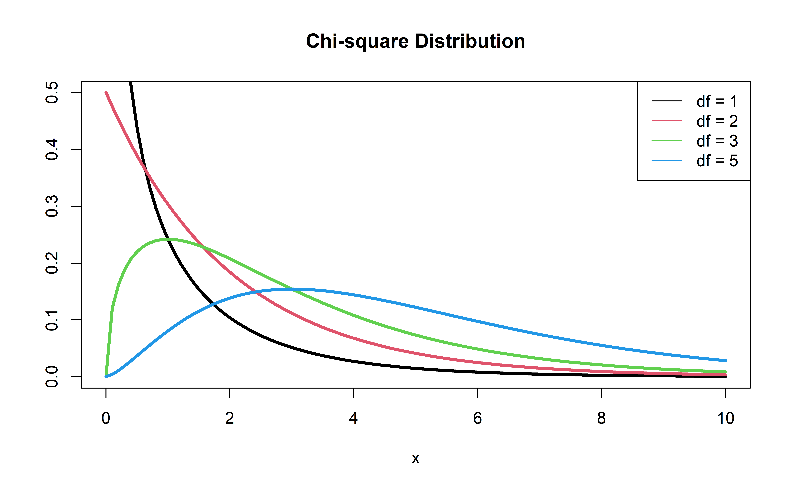

# load packages
library(tidyverse)
library(broom)
library(openintro)
library(knitr)
library(kableExtra) # for table embellishments
library(Stat2Data) # for empirical logit
# set default theme and larger font size for ggplot2
ggplot2::theme_set(ggplot2::theme_bw(base_size = 20))Multiple Logistic Regression
Topics
- Extending what we’ve learned to logistic regression models with multiple predictors
. . .
📋 AE 12 - Multiple Logistic Regression
- Complete all of AE 12 using slides as needed.
Computational setup
Data
Risk of coronary heart disease
This data set is from an ongoing cardiovascular study on residents of the town of Framingham, Massachusetts. We want to examine the relationship between various health characteristics and the risk of having heart disease.
TenYearCHD:- 1: Developed heart disease in next 10 years
- 0: Did not develop heart disease in next 10 years
age: Age at exam time (in years)education: 1 = Some High School, 2 = High School or GED, 3 = Some College or Vocational School, 4 = College
Data prep
heart_disease <- read_csv("../data/framingham.csv") |>
select(TenYearCHD, age, education) |>
drop_na() |>
mutate(education = as.factor(education))
heart_disease |> head() |> kable()| TenYearCHD | age | education |
|---|---|---|
| 0 | 39 | 4 |
| 0 | 46 | 2 |
| 0 | 48 | 1 |
| 1 | 61 | 3 |
| 0 | 46 | 3 |
| 0 | 43 | 2 |
Coefficient Interpretation
Model output
risk_fit <- glm(TenYearCHD ~ age + education,
data = heart_disease, family = "binomial")
risk_fit |> tidy() |> kable(digits = 3)| term | estimate | std.error | statistic | p.value |
|---|---|---|---|---|
| (Intercept) | -5.385 | 0.308 | -17.507 | 0.000 |
| age | 0.073 | 0.005 | 13.385 | 0.000 |
| education2 | -0.242 | 0.112 | -2.162 | 0.031 |
| education3 | -0.235 | 0.134 | -1.761 | 0.078 |
| education4 | -0.020 | 0.148 | -0.136 | 0.892 |
\[ \small{\log\Big(\frac{\hat{\pi}}{1-\hat{\pi}}\Big) = -5.385 + 0.073 ~ \text{age} - 0.242 ~ \text{ed2} - 0.235 ~ \text{ed3} - 0.020 ~ \text{ed4}} \]
Model Interpretation
risk_fit <- glm(TenYearCHD ~ age + education,
data = heart_disease, family = "binomial")
risk_fit |> tidy() |> kable(digits = 3)| term | estimate | std.error | statistic | p.value |
|---|---|---|---|---|
| (Intercept) | -5.385 | 0.308 | -17.507 | 0.000 |
| age | 0.073 | 0.005 | 13.385 | 0.000 |
| education2 | -0.242 | 0.112 | -2.162 | 0.031 |
| education3 | -0.235 | 0.134 | -1.761 | 0.078 |
| education4 | -0.020 | 0.148 | -0.136 | 0.892 |
As age increases by a year, the typical log-odds of developing coronary heart disease within the next 10 years increases by 0.073 for patients with the same level of education.
. . .
As age increases by a year, the typical odds of developing coronary heart disease within the next 10 years increases by a factor of \(\exp(0.073)\approx 1.08\) (i.e. 8%) for patients with the same level of education.
Model Interpretation
risk_fit <- glm(TenYearCHD ~ age + education,
data = heart_disease, family = "binomial")
risk_fit |> tidy() |> kable(digits = 3)| term | estimate | std.error | statistic | p.value |
|---|---|---|---|---|
| (Intercept) | -5.385 | 0.308 | -17.507 | 0.000 |
| age | 0.073 | 0.005 | 13.385 | 0.000 |
| education2 | -0.242 | 0.112 | -2.162 | 0.031 |
| education3 | -0.235 | 0.134 | -1.761 | 0.078 |
| education4 | -0.020 | 0.148 | -0.136 | 0.892 |
Patients of the same age who have [a High School diploma or GED/Some College or Vocational School/a College education], the typical log-odds of developing coronary heart disease within the next 10 years is 0.242/0.235/0.020 lower than patients with only some high school.
. . .
Patients of the same age who have [a High School diploma or GED/Some College or Vocational School/a College education], the typical odds of developing coronary heart disease within the next 10 years is 79.5%/79.1%/98.0% of the odds for patients with only some high school.
Inference for a single \(\beta_j\)
Hypothesis test for \(\beta_j\)
Hypotheses: \(H_0: \beta_j = 0 \hspace{2mm} \text{ vs } \hspace{2mm} H_a: \beta_j \neq 0\), given the other variables in the model
. . .
Test Statistic: \[z = \frac{\hat{\beta}_j - 0}{SE_{\hat{\beta}_j}}\]
. . .
P-value: \(P(|Z| > |z|)\), where \(Z \sim N(0, 1)\), the Standard Normal distribution
Confidence interval for \(\beta_j\)
We can calculate the C% confidence interval for \(\beta_j\) as the following:
\[ \Large{\hat{\beta}_j \pm z^* SE_{\hat{\beta}_j}} \]
where \(z^*\) is calculated from the \(N(0,1)\) distribution
. . .
Note
This is an interval for the change in the log-odds for every one unit increase in \(x_j\)
Interpretation in terms of the odds
The change in odds for every one unit increase in \(x_j\).
\[ \Large{\exp\{\hat{\beta}_j \pm z^* SE_{\hat{\beta}_j}\}} \]
. . .
Interpretation: We are \(C\%\) confident that for every one unit increase in \(x_j\), the odds multiply by a factor of \(\exp\{\hat{\beta}_j - z^* SE_{\hat{\beta}_j}\}\) to \(\exp\{\hat{\beta}_j + z^* SE_{\hat{\beta}_j}\}\), holding all else constant.
Coefficient for age
| term | estimate | std.error | statistic | p.value | conf.low | conf.high |
|---|---|---|---|---|---|---|
| (Intercept) | -5.385 | 0.308 | -17.507 | 0.000 | -5.995 | -4.788 |
| age | 0.073 | 0.005 | 13.385 | 0.000 | 0.063 | 0.084 |
| education2 | -0.242 | 0.112 | -2.162 | 0.031 | -0.463 | -0.024 |
| education3 | -0.235 | 0.134 | -1.761 | 0.078 | -0.501 | 0.023 |
| education4 | -0.020 | 0.148 | -0.136 | 0.892 | -0.317 | 0.266 |
. . .
Hypotheses:
\[ H_0: \beta_{age} = 0 \hspace{2mm} \text{ vs } \hspace{2mm} H_a: \beta_{age} \neq 0 \] given education is in the model
Coefficient for age
| term | estimate | std.error | statistic | p.value | conf.low | conf.high |
|---|---|---|---|---|---|---|
| (Intercept) | -5.385 | 0.308 | -17.507 | 0.000 | -5.995 | -4.788 |
| age | 0.073 | 0.005 | 13.385 | 0.000 | 0.063 | 0.084 |
| education2 | -0.242 | 0.112 | -2.162 | 0.031 | -0.463 | -0.024 |
| education3 | -0.235 | 0.134 | -1.761 | 0.078 | -0.501 | 0.023 |
| education4 | -0.020 | 0.148 | -0.136 | 0.892 | -0.317 | 0.266 |
Test statistic:
\[z = \frac{0.07328 - 0}{0.00547} = 13.39\]
Coefficient for age
| term | estimate | std.error | statistic | p.value | conf.low | conf.high |
|---|---|---|---|---|---|---|
| (Intercept) | -5.385 | 0.308 | -17.507 | 0.000 | -5.995 | -4.788 |
| age | 0.073 | 0.005 | 13.385 | 0.000 | 0.063 | 0.084 |
| education2 | -0.242 | 0.112 | -2.162 | 0.031 | -0.463 | -0.024 |
| education3 | -0.235 | 0.134 | -1.761 | 0.078 | -0.501 | 0.023 |
| education4 | -0.020 | 0.148 | -0.136 | 0.892 | -0.317 | 0.266 |
P-value:
\[ P(|Z| > |13.39|) \approx 0 \]
. . .
2 * pnorm(13.64,lower.tail = FALSE)[1] 2.315606e-42Coefficient for age
| term | estimate | std.error | statistic | p.value | conf.low | conf.high |
|---|---|---|---|---|---|---|
| (Intercept) | -5.385 | 0.308 | -17.507 | 0.000 | -5.995 | -4.788 |
| age | 0.073 | 0.005 | 13.385 | 0.000 | 0.063 | 0.084 |
| education2 | -0.242 | 0.112 | -2.162 | 0.031 | -0.463 | -0.024 |
| education3 | -0.235 | 0.134 | -1.761 | 0.078 | -0.501 | 0.023 |
| education4 | -0.020 | 0.148 | -0.136 | 0.892 | -0.317 | 0.266 |
Conclusion:
The p-value is very small, so we reject \(H_0\). The data provide sufficient evidence that age is a statistically significant predictor of whether someone is will develop heart disease in the next year, after accounting for education.
Comparing Nested Models
Comparing nested models
Suppose there are two models:
- Reduced Model includes predictors \(x_1, \ldots, x_q\)
- Full Model includes predictors \(x_1, \ldots, x_q, x_{q+1}, \ldots, x_p\)
We want to test the hypotheses
\[ \begin{aligned} H_0&: \beta_{q+1} = \dots = \beta_p = 0 \\ H_A&: \text{ at least one }\beta_j \text{ is not } 0 \end{aligned} \]
To do so, we will use the Nested Likelihood Ratio test (LRT), also known as the Drop-in-deviance test,
Likelihood Ratio test
Hypotheses:
\[ \begin{aligned} H_0&: \beta_{q+1} = \dots = \beta_p = 0 \\ H_A&: \text{ at least 1 }\beta_j \text{ is not } 0 \end{aligned} \]
. . .
Test Statistic: \[G = (-2 \log L_{reduced}) - (-2 \log L_{full})\]
or sometimes
Test Statistic: \[G = (-2 \log L_{0}) - (-2 \log L)\]
. . .
P-value: \(P(\chi^2 > G)\), calculated using a \(\chi^2\) distribution with degrees of freedom equal to the difference in the number of parameters in the full and reduced models
\(\chi^2\) distribution

Should we add education to a model with only age?
First model, reduced:
risk_fit_reduced <- glm(TenYearCHD ~ age,
data = heart_disease, family = "binomial"). . .
Second model, full:
Should we add education to the model?
Calculate deviance for each model:
dev_reduced <- glance(risk_fit_reduced)$deviance
dev_reduced[1] 3306.68dev_full <- glance(risk_fit_full)$deviance
dev_full[1] 3300.135Should we add education to the model?
Drop-in-deviance test statistic:
test_stat <- dev_reduced - dev_full
test_stat[1] 6.544306Should we add education to the model?
Calculate the p-value using a pchisq(), with degrees of freedom equal to the number of new model terms in the second model:
pchisq(test_stat, 3, lower.tail = FALSE) [1] 0.08793145. . .
Conclusion: The p-value is between 0.1 and 0.05 indicating mild but not strong evidence that a model with education is a useful predictor when age is already in the model.
Drop-in-Deviance test in R
We can use the
anovafunction to conduct this testAdd
test = "Chisq"to conduct the drop-in-deviance test
. . .
anova(risk_fit_reduced, risk_fit_full, test = "Chisq") |>
tidy() |> kable(digits = 3)| term | df.residual | residual.deviance | df | deviance | p.value |
|---|---|---|---|---|---|
| TenYearCHD ~ age | 4133 | 3306.680 | NA | NA | NA |
| TenYearCHD ~ age + education | 4130 | 3300.135 | 3 | 6.544 | 0.088 |
Recap
- Today: Simple logistic to Multiple logistic
- Coefficient interpretations
- Wald test interpretations
- LRTs and Drop-in-Deviance tests
- Basic idea add “holding all else constant”
- LRT allows you to compare nested models and requires a degree of free for each extra parameter in the full model